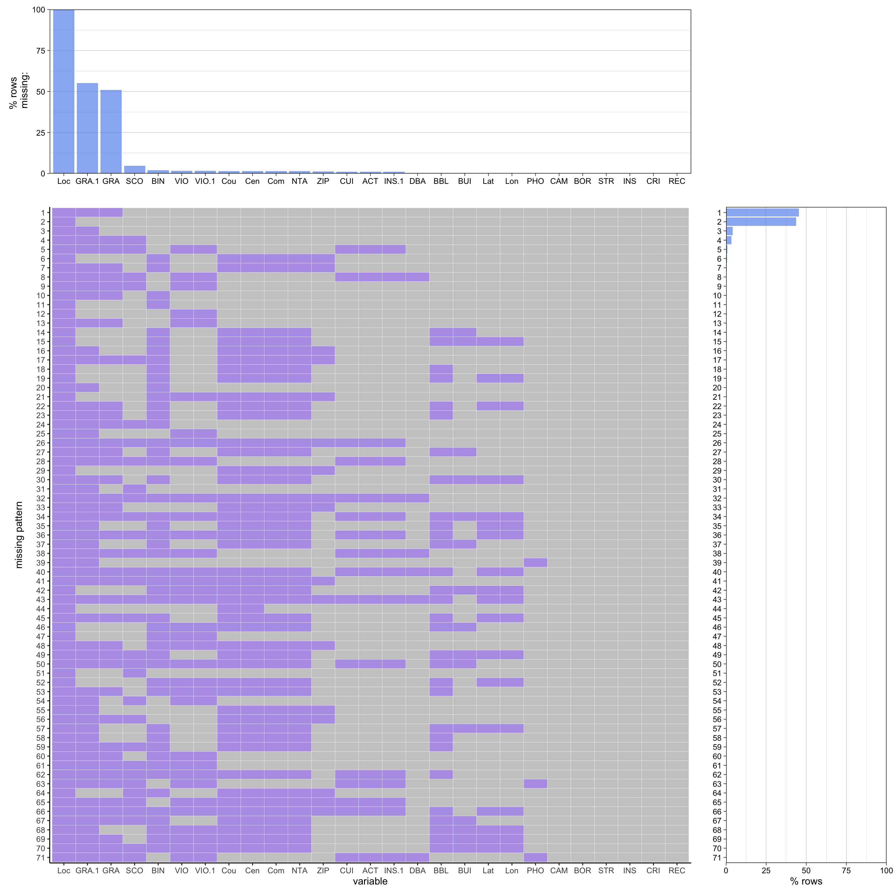

CAMIS DBA BORO BUILDING
Min. :30075445 Length:209461 Length:209461 Length:209461
1st Qu.:41650772 Class :character Class :character Class :character
Median :50067509 Mode :character Mode :character Mode :character
Mean :47562487
3rd Qu.:50107236
Max. :50144695
STREET ZIPCODE PHONE CUISINE DESCRIPTION
Length:209461 Min. : 8512 Length:209461 Length:209461
Class :character 1st Qu.:10023 Class :character Class :character
Mode :character Median :11101 Mode :character Mode :character
Mean :10708
3rd Qu.:11231
Max. :12345
NA's :2684
INSPECTION DATE ACTION VIOLATION CODE VIOLATION DESCRIPTION
Length:209461 Length:209461 Length:209461 Length:209461
Class :character Class :character Class :character Class :character
Mode :character Mode :character Mode :character Mode :character
CRITICAL FLAG SCORE GRADE GRADE DATE
Length:209461 Min. : 0.00 Length:209461 Length:209461
Class :character 1st Qu.: 11.00 Class :character Class :character
Mode :character Median : 19.00 Mode :character Mode :character
Mean : 22.82
3rd Qu.: 31.00
Max. :168.00
NA's :9954
RECORD DATE INSPECTION TYPE Latitude Longitude
Length:209461 Length:209461 Min. : 0.00 Min. :-74.25
Class :character Class :character 1st Qu.:40.68 1st Qu.:-73.99
Mode :character Mode :character Median :40.73 Median :-73.96
Mean :40.20 Mean :-72.99
3rd Qu.:40.76 3rd Qu.:-73.90
Max. :40.91 Max. : 0.00
NA's :274 NA's :274
Community Board Council District Census Tract BIN
Min. :101.0 Length:209461 Length:209461 Min. :1000000
1st Qu.:106.0 Class :character Class :character 1st Qu.:1051363
Median :302.0 Mode :character Mode :character Median :3022138
Mean :254.7 Mean :2577940
3rd Qu.:401.0 3rd Qu.:4006875
Max. :595.0 Max. :5799501
NA's :3231 NA's :4226
BBL NTA Location Point1
Min. :1.000e+00 Length:209461 Mode:logical
1st Qu.:1.011e+09 Class :character NA's:209461
Median :3.008e+09 Mode :character
Mean :2.467e+09
3rd Qu.:4.005e+09
Max. :5.270e+09
NA's :553
Data Collection: Data is collected from NYC Open data and provided by Department of Health and Mental Hygiene (DOHMH)
Data Import: Daily download from the NYC Open Data website and push to Github
Unclear columns:
BIN:
Format: numeric with 7 digits
Meaning: Building Identification Number
BBL:
Format: numeric with 10 digits
Meaning: Borough, Block, and Lot
NTA:
Format: char, letters+numbers with 4 characters
Meaning: Neighborhood Tabulation Area
Council District
Format: char, from 1 to 51 in New York
Meaning: Each number uniquely identifies a specific council district within the city
Census Tract
Format: char with 6 digits
Meaning: Census tracts are small, relatively permanent statistical subdivisions of a county or equivalent entity designed to be relatively homogeneous units concerning population characteristics, economic status, and living conditions
Dimension:
Identification: CAMIS (a unique identifier for each establishment), DBA (Doing Business As, the name of the establishment), and contact information such as PHONE.
Location: This includes BORO (borough), BUILDING (building number), STREET, ZIPCODE, and more detailed geographical identifiers such as Latitude, Longitude, Community Board, Council District, Census Tract, BIN (Building Identification Number), BBL (Borough, Block and Lot), NTA (Neighborhood Tabulation Area), and Location Point1.Inspection
Inspection Details: CUISINE DESCRIPTION (type of food served), INSPECTION DATE, ACTION (the result of the inspection), VIOLATION CODE, VIOLATION DESCRIPTION, CRITICAL FLAG (whether the violation is critical or not), and INSPECTION TYPE.
Scoring and Grading: SCORE (the score received on the inspection), GRADE (the grade assigned post-inspection), and GRADE DATE (when the grade was issued).
Administrative: RECORD DATE (when the data was recorded or updated in the dataset).
Issues and Problems with this dataset:
Adjudication Delays:
The adjudication process can take several months, during which scores and grades may be revised. Current scores may not be final and are subject to change upon the completion of adjudication.
Discrepancies between SCORE and GRADE:
They should be consistent but because of limitations in data system they may be not. Expected corresponding grades for scores (A for 0-13, B for 14-27, C for 28+) might not always match.
When initial inspections are adjudicated down to an A score, no grade is assigned until the re-inspection, which is why an accompanying grade might be absent.
Example: a grade card was given out but the record of that grade issuance is missing from the data system even if SCORE is populated
Convert Datatype:
numeric to char: BIN, BBL, Community Board
char to date: GRADE DATE, RECORD DATE, INSPECTION DATE
Source:
New York City Department of Health and Mental Hygiene (DOHMH)
Note that there are a lot of NA values in variable GRADE, variable SCORE (inspection score) would be mainly used for this project, and variables that will not be used are going to be dropped in the results.qmd file. To begin with, for background information for the main research questions of the project, CUISINE DESCRIPTION (type of food served) will be visualized on the NYC map to find if there are specific cuisines are located on specific cities or BORO (borough) more than other cuisines.
The first main question of this project is finding relationship between inspection scores and locations. Variables such as BORO (borough), STREET, Latitude, and Longitude represent the location of each restaurant. The main focus would be finding relationship between BORO (borough) and SCORE (inspection score)/CRITICAL FLAG (whether the violation is critical or not). The inspection scores will be visualized on the NYC map by BORO (borough). After that, for a more detailed analysis, we would work visualize certain restaurants by Latitude and Longitude with their scores. For example, restaurants with good scores on the map and restaurants with bad scores or whose CRITICAL FLAG is critical can be visualized on the map.
Another main question of this project is finding relationship between inspection scores and cuisines by using variables CUISINE DESCRIPTION (type of food served) and SCORE (inspection score). We expect to find meaningful patterns such as specific cuisines have good or bad inspection scores. Other than the inspection scores, we would try finding a pattern between cuisines and specific VIOLATION DESCRIPTION/VIOLATION CODE to get a detailed information about violations. We also expect to find if certain cuisines have certain violations more than other cuisines.
In short, by using variables BORO, STREET, Latitude, Longitude, SCORE, and CRITICAL FLAG, we expect to find some meaningful patterns between locations and inspection scores. And restaurants whose scores are good or bad would be visualized on the map for audiences who want to sort restaurants out for an actual visit. Secondly, by using variables CUISINE DESCRIPTION, VIOLATION DESCRIPTION/VIOLATION CODE, and SCORE, we expect to find some meaningful patterns between cuisines and inspection score/violation types. Note that after the inspections, restaurants can go through the adjudication process or argue their case at an administrative hearing. Also restaurants have appeal rights that the entire adjudication process can take several months. For a deeper research, ACTION (the result of the inspection) would be analyzed by locations and cuisines, but if there are no patterns between variables, we would skip this part.
Location Point1 has 100% of missing value, which can be removed. GRADE DATE has the second highest percentage of missing data, at 55.1% (marked in red), which is considered bad in the chart. GRADE also has a significant amount of missing data, marked in red. This chart suggests that features like GRADE and GRADE DATE may require more attention. On the other hand, features with green bars could be considered relatively clean and may not need as much preprocessing related to missing values. ### Raster Plot
The plot shows that all data in Location Point1 column are missing, as shown by the red color fill. In addition, GRADE DATE and GRADE are also missing lots of data. Two features are dependent on each other and represent the same dimension, which is grade of the restaurant, so the data points in two features are often missing together.
Scale for y is already present.
Adding another scale for y, which will replace the existing scale.
Scale for y is already present.
Adding another scale for y, which will replace the existing scale.

When we look at the patterns, the most common pattern is the missing of Location, GRADE DATE, and GRADE, accounting for around 43.75% of the rows. This indicates lots of the discrepancies of GRADE and SCORE that could be due to the reasons mentioned in the section of Technical Description. For pattern2, we have about 39% of the rows only missing Location which is missing in all data.